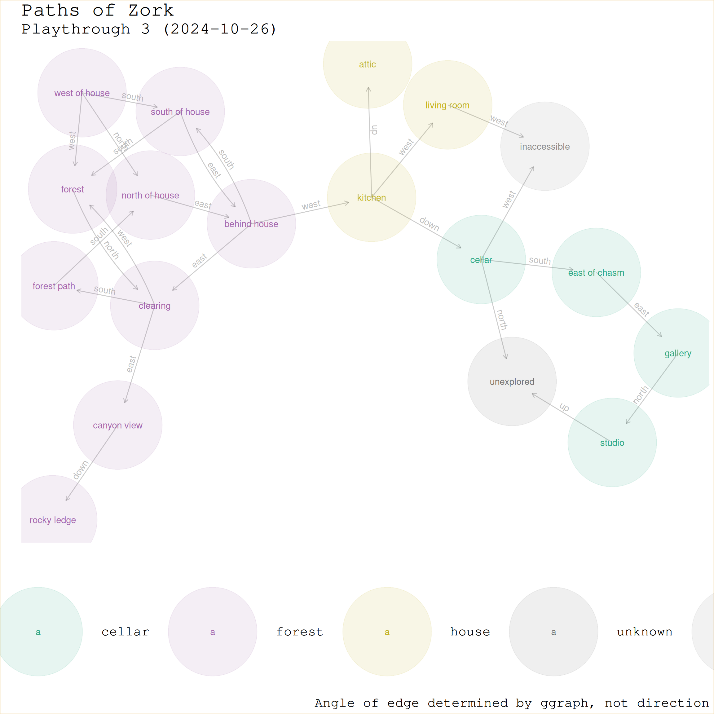

Code
library(tidyverse)Charles T. Gray
October 26, 2024
So now I need better data capture than editing the raw tsv, and a better way of organising my code. Currently I have data in zork/data.
Already I see I need to split the data into two datasets. One where each row is uniquely defined by node
| perspective_location | region | interactivity |
|---|---|---|
| west of house | forest | mailbox |
| north of house | forest | NA |
| forest path | forest | NA |
| clearing | forest | pile of leaves |
| clearing | forest | NA |
| behind house | house | window |
and one where each row is uniquely defined by edge.
| perspective_location | perspective_to_target | target_location | playthrough |
|---|---|---|---|
| west of house | north | north of house | 2024-10-22 |
| north of house | north | forest path | 2024-10-22 |
| forest path | north | clearin | 2024-10-22 |
| clearing | north | forest | 2024-10-22 |
| clearing | east | forest | 2024-10-22 |
| clearing | west | forest | 2024-10-22 |
No doubt there will be other things. (Do I need a dataset for region?)
I will create a new dataset for this, but use the original playthrough as the template.
# A tibble: 0 × 3
# ℹ 3 variables: perspective_location <chr>, perspective_to_target <chr>,
# target_location <chr># A tibble: 0 × 4
# ℹ 4 variables: perspective_location <chr>, region <chr>, interactivity <chr>,
# loot <chr>I could do something fancy, but I think I’ll go with add_row to update the data. Let’s add one row for the start.
# Set levels of columns
locations <- list(
unexplored = 'unexplored',
west_of_house = 'west of house',
north_of_house = 'north of house',
forest = 'forest',
clearing = 'clearing',
forest_path = 'forest path',
behind_house = 'behind house',
south_of_house = 'south of house',
kitchen = 'kitchen',
living_room = 'living room',
attic = 'attic',
canyon_view = 'canyon view',
rocky_ledge = 'rocky ledge',
cellar = 'cellar',
inaccessible = 'inaccessible',
east_of_chasm = 'east of chasm',
gallery = 'gallery',
studio = 'studio'
)
directions <- list(
north = 'north',
south = 'south',
east = 'east',
west = 'west',
up = 'up',
down = 'down'
)
regions <- list(
unexplored = 'unexplored',
forest = 'forest',
house = 'house',
cellar = 'cellar'
)unknown = 'unknown'
zork_nodes <- zork_nodes |>
add_row(
perspective_location = locations$west_of_house,
region = regions$forest,
interactivity = 'solved: mailbox',
loot = 'leaflet'
) |>
add_row(
perspective_location = locations$north_of_house,
region = regions$forest,
interactivity = 'none',
loot = 'none'
) |>
add_row(
perspective_location = locations$forest,
region = regions$forest,
interactivity = 'song bird?',
loot = 'none'
) |>
add_row(
perspective_location = locations$clearing,
region = regions$forest,
interactivity = 'unsolved: pile of leaves',
loot = 'none'
) |>
add_row(
perspective_location = locations$forest_path,
region = regions$forest,
interactivity = 'none',
loot = 'none'
) |>
add_row(
perspective_location = locations$behind_house,
region = regions$forest,
interactivity = 'window to house',
loot = 'none'
) |>
add_row(
perspective_location = locations$south_of_house,
region = regions$forest,
interactivity = 'none',
loot = 'none'
) |>
add_row(
perspective_location = locations$kitchen,
region = regions$house,
interactivity = 'sack',
loot = 'water, lunch, garlic'
) |>
add_row(
perspective_location = locations$living_room,
region = regions$house,
interactivity = 'rug, locked door to west',
loot = 'sword, lantern'
) |>
add_row(
perspective_location = locations$attic,
region = regions$house,
interactivity = 'none',
loot = 'rope, knife'
) |>
add_row(
perspective_location = locations$unexplored,
region = unknown,
interactivity = unknown,
loot = unknown
) |>
add_row(
perspective_location = locations$canyon_view,
region = regions$forest,
interactivity = 'none',
loot = 'none'
) |>
add_row(
perspective_location = locations$rocky_ledge,
region = regions$forest,
interactivity = 'none',
loot = 'none'
) |>
add_row(
perspective_location = locations$cellar,
region = regions$cellar,
interactivity = 'none',
loot = 'none'
) |>
add_row(
perspective_location = locations$inacessible,
region = regions$unknown,
interactivity = 'none',
loot = 'none'
) |>
add_row(
perspective_location = locations$east_of_chasm,
region = regions$cellar,
interactivity = 'none',
loot = 'none'
) |>
add_row(
perspective_location = locations$gallery,
region = regions$cellar,
interactivity = 'painting',
loot = 'none'
) |>
add_row(
perspective_location = locations$studio,
region = regions$cellar,
interactivity = 'note, 69 colours',
loot = 'none'
)zork_edges <- zork_edges |>
add_row(
perspective_location = locations$west_of_house,
perspective_to_target = directions$north,
target_location = locations$north_of_house
) |>
add_row(
perspective_location = locations$west_of_house,
perspective_to_target = directions$west,
target_location = locations$forest
) |>
add_row(
perspective_location = locations$forest,
perspective_to_target = directions$north,
target_location = locations$clearing
) |>
add_row(
perspective_location = locations$clearing,
perspective_to_target = directions$west,
target_location = locations$forest
) |>
add_row(
perspective_location = locations$clearing,
perspective_to_target = directions$south,
target_location = locations$forest_path
) |>
add_row(
perspective_location = locations$forest_path,
perspective_to_target = directions$south,
target_location = locations$north_of_house
) |>
add_row(
perspective_location = locations$north_of_house,
perspective_to_target = directions$east,
target_location = locations$behind_house
) |>
add_row(
perspective_location = locations$behind_house,
perspective_to_target = directions$south,
target_location = locations$south_of_house
) |>
add_row(
perspective_location = locations$south_of_house,
perspective_to_target = directions$south,
target_location = locations$forest
) |>
add_row(
perspective_location = locations$behind_house,
perspective_to_target = directions$west,
target_location = locations$kitchen
) |>
add_row(
perspective_location = locations$kitchen,
perspective_to_target = directions$west,
target_location = locations$living_room
) |>
add_row(
perspective_location = locations$kitchen,
perspective_to_target = directions$up,
target_location = locations$attic
) |>
add_row(
perspective_location = locations$living_room,
perspective_to_target = directions$west,
target_location = locations$inaccessible
) |>
add_row(
perspective_location = locations$west_of_house,
perspective_to_target = directions$south,
target_location = locations$south_of_house
) |>
add_row(
perspective_location = locations$south_of_house,
perspective_to_target = directions$east,
target_location = locations$behind_house
) |>
add_row(
perspective_location = locations$behind_house,
perspective_to_target = directions$east,
target_location = locations$clearing
) |>
add_row(
perspective_location = locations$clearing,
perspective_to_target = directions$east,
target_location = locations$canyon_view
) |>
add_row(
perspective_location = locations$canyon_view,
perspective_to_target = directions$down,
target_location = locations$rocky_ledge
) |>
add_row(
perspective_location = locations$kitchen,
perspective_to_target = directions$down,
target_location = locations$cellar
) |>
add_row(
perspective_location = locations$cellar,
perspective_to_target = directions$north,
target_location = locations$unexplored
) |>
add_row(
perspective_location = locations$cellar,
perspective_to_target = directions$south,
target_location = locations$east_of_chasm
) |>
add_row(
perspective_location = locations$east_of_chasm,
perspective_to_target = directions$east,
target_location = locations$gallery
) |>
add_row(
perspective_location = locations$cellar,
perspective_to_target = directions$west,
target_location = locations$inaccessible
) |>
add_row(
perspective_location = locations$gallery,
perspective_to_target = directions$north,
target_location = locations$studio
) |>
add_row(
perspective_location = locations$studio,
perspective_to_target = directions$up,
target_location = locations$unexplored
)
zork_edges# A tibble: 25 × 3
perspective_location perspective_to_target target_location
<chr> <chr> <chr>
1 west of house north north of house
2 west of house west forest
3 forest north clearing
4 clearing west forest
5 clearing south forest path
6 forest path south north of house
7 north of house east behind house
8 behind house south south of house
9 south of house south forest
10 behind house west kitchen
# ℹ 15 more rowsI wonder if I can join the nodes dataframe to the nodes of the ggraph object?
Attaching package: 'tidygraph'The following object is masked from 'package:stats':
filter# A tbl_graph: 18 nodes and 25 edges
#
# A directed simple graph with 1 component
#
# Node Data: 18 × 4 (active)
name region interactivity loot
<chr> <chr> <chr> <chr>
1 west of house forest solved: mailbox leaflet
2 forest forest song bird? none
3 clearing forest unsolved: pile of leaves none
4 forest path forest none none
5 north of house forest none none
6 behind house forest window to house none
7 south of house forest none none
8 kitchen house sack water, lunch, garlic
9 living room house rug, locked door to west sword, lantern
10 canyon view forest none none
11 cellar cellar none none
12 east of chasm cellar none none
13 gallery cellar painting none
14 studio cellar note, 69 colours none
15 attic house none rope, knife
16 inaccessible <NA> <NA> <NA>
17 rocky ledge forest none none
18 unexplored unknown unknown unknown
#
# Edge Data: 25 × 5
from to perspective_location perspective_to_target target_location
<int> <int> <chr> <chr> <chr>
1 1 5 west of house north north of house
2 1 2 west of house west forest
3 2 3 forest north clearing
# ℹ 22 more rowslibrary(ggraph)
n_regions <- length(regions)
cols_f <- colorRampPalette(RColorBrewer::brewer.pal(8, 'Dark2'))
zork_graph |>
ggraph() +
geom_edge_fan(aes(label = perspective_to_target),
alpha = 0.2,
angle_calc = 'along',
label_colour = 'grey',
label_dodge = unit(2.5, 'mm'),
arrow = arrow(length = unit(2, 'mm')),
end_cap = circle(1, 'cm')) +
geom_node_point(aes(colour = region), size = 50, alpha = 0.1) +
geom_node_text(aes(label = name, colour = region),
alpha = 0.9) +
theme_minimal() +
scale_edge_colour_manual(values = cols_f(n_regions)) +
scale_colour_manual(values = cols_f(n_regions)) +
theme(
plot.background = element_rect(colour = "#F5DEB3"),
legend.position = 'bottom',
text = element_text(family = "Courier", size = 20),
axis.ticks = element_blank(),
axis.text = element_blank(),
panel.grid = element_blank()
) +
labs(
title = "Paths of Zork",
subtitle = "Playthrough 3 (2024-10-26)",
caption = "Angle of edge determined by ggraph, not direction",
x = "",
y = ""
) Using "stress" as default layout
| perspective_location | region | interactivity | loot |
|---|---|---|---|
| west of house | forest | solved: mailbox | leaflet |
| north of house | forest | none | none |
| forest | forest | song bird? | none |
| clearing | forest | unsolved: pile of leaves | none |
| forest path | forest | none | none |
| behind house | forest | window to house | none |
| south of house | forest | none | none |
| kitchen | house | sack | water, lunch, garlic |
| living room | house | rug, locked door to west | sword, lantern |
| attic | house | none | rope, knife |
| unexplored | unknown | unknown | unknown |
| canyon view | forest | none | none |
| rocky ledge | forest | none | none |
| cellar | cellar | none | none |
| NA | NA | none | none |
| east of chasm | cellar | none | none |
| gallery | cellar | painting | none |
| studio | cellar | note, 69 colours | none |
Now to add rows and watch the plot update.
Next time will try using a google sheet and scraping it. Is too cumbersome coding. But will have to get workflow for setting levels of categorical variables.